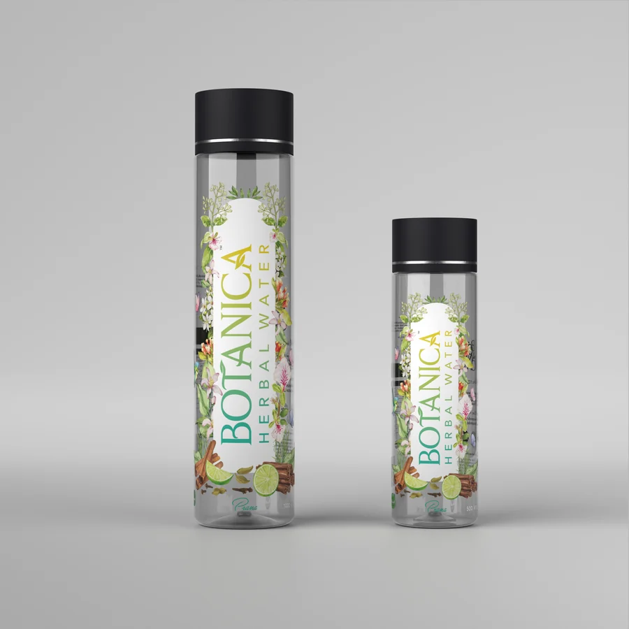
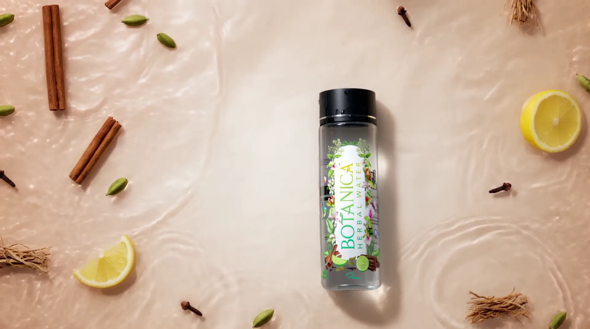
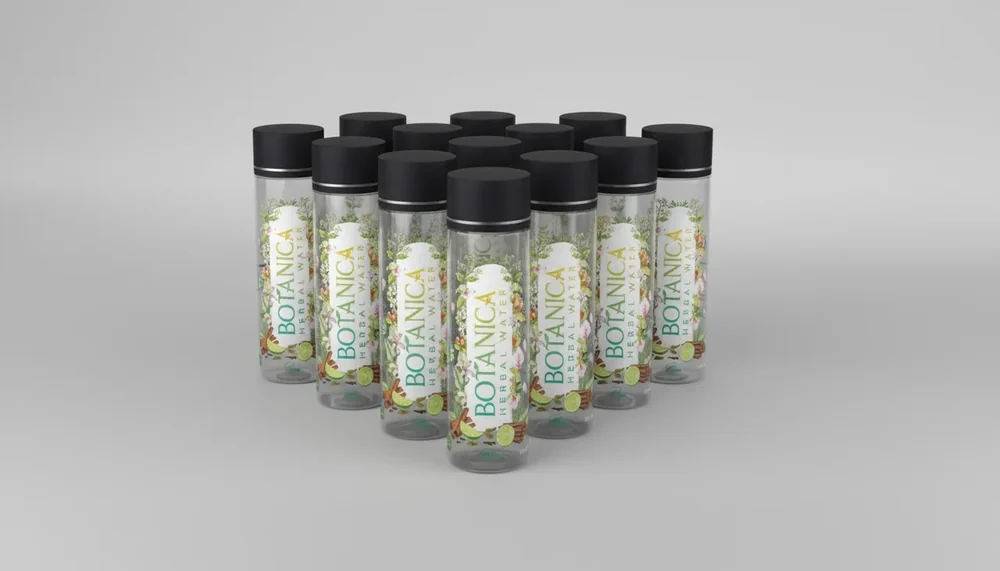
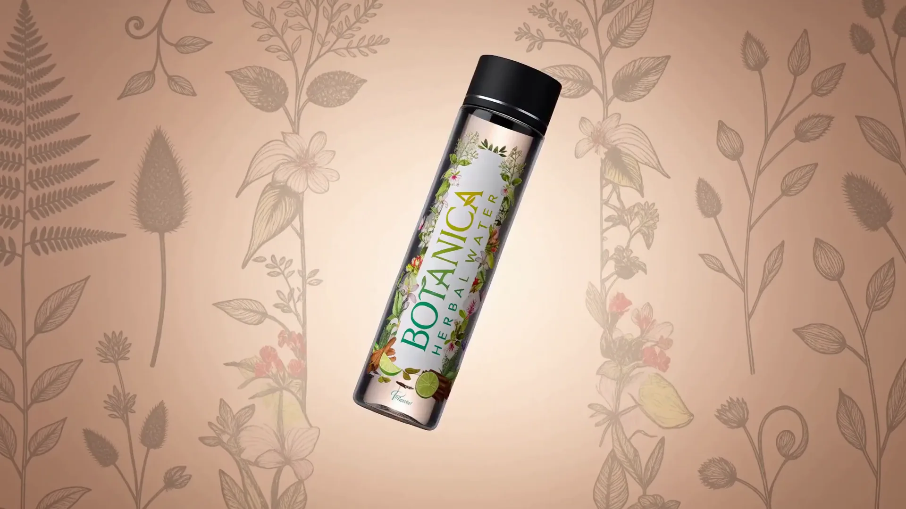
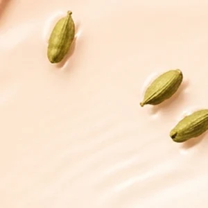
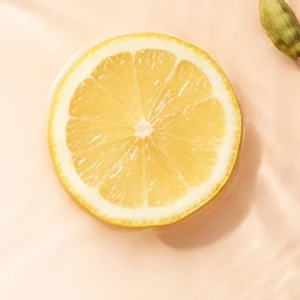
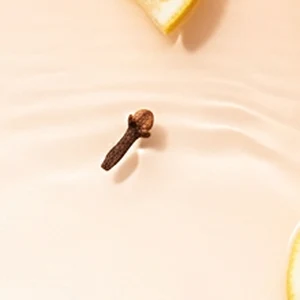
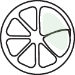
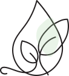
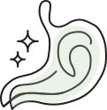

Save ₹20


Water, infused with herbs, roots, spices and citrus from the living world.
Shop


Vetiver
Cardamom
Cinnamon
Lemon
Clove
Cold infused. Never flavoured, never sweetened.
From the earth, we chose Vetiver.
Valued for its natural cooling properties, it helps soothe inflammation and supports healthier skin, bringing a grounding effect on the mind.

From the spice gardens, we picked Cardamom.
Naturally aromatic and deeply restorative, it supports digestion by easing bloating, with a rich antioxidant profile that alleviates oxidative stress.
From the bark of the Cinnamon tree, came warmth.
Packed with antioxidant properties, it helps protect the body from oxidative stress, regulate blood sugar levels and promote healthy digestion.

From Lemon, came zest and brightness.
Naturally rich in vitamin C and antioxidants, it helps strengthen immunity and protects the body from free radical damage.

In Cloves, we found strength in the smallest form.
Renowned for antimicrobial properties, they help fight harmful bacteria and support oral health, protecting cells from oxidative damage.
This is water, the source of life, infused with herbs, roots, spices and citrus from the living world.
100% vegan. No added preservatives.
Made with only the purest ingredients, free from preservatives and artificial additives.
Crafted for a plant-based lifestyle, our product is 100% vegan and cruelty-free.

Enjoy crisp, refreshing herbal flavors with no added sugars or artificial sweeteners.

Stay naturally refreshed and hydrated with the pure, nourishing power of herbal ingredients.

Infused with cardamom and vetiver to gently support digestion and promote gut health.
Packed with powerful antioxidants to naturally support and strengthen your immune system.
Made without animal derived ingredients, and without added preservatives.
Trial PackPrana by Botanica
1000ml × 2 ₹340Prana Herbal WaterBest value per litre
500ml × 12 ₹1,320Prana Herbal WaterPrana by Botanica
1000ml × 9 ₹1,440Prana Herbal WaterPrana by Botanica
1000ml × 12 ₹1,860